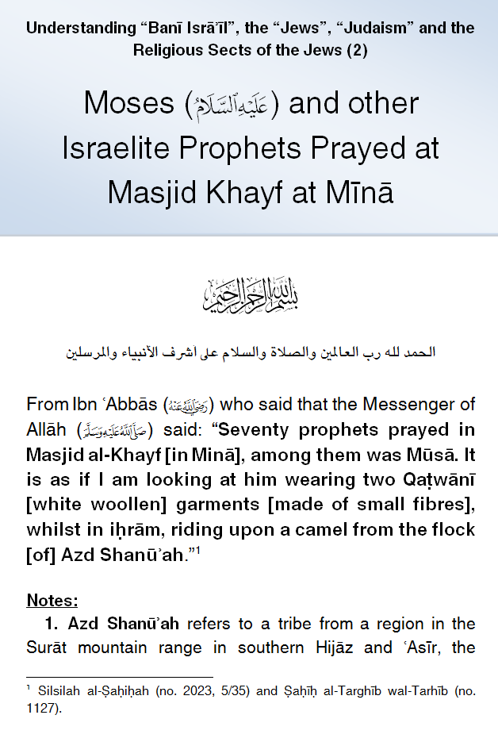
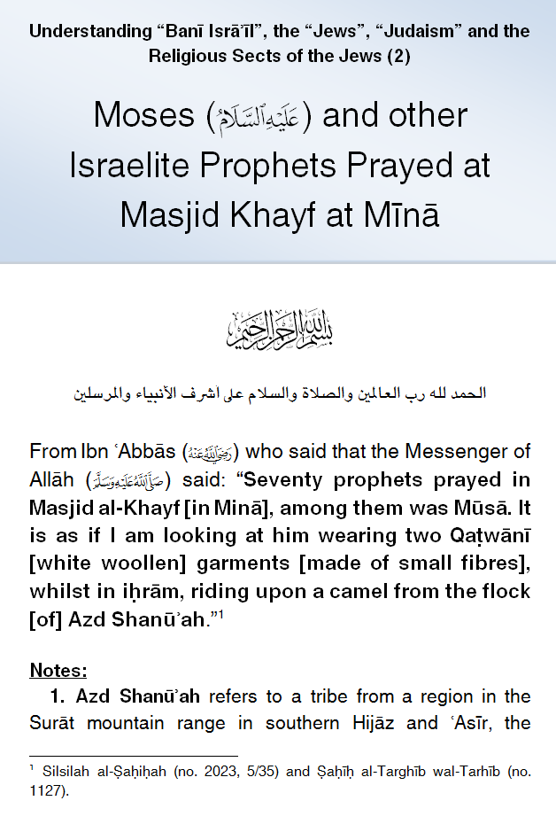

IslamMoses.Com
Posted by Abu Iyaad on Sunday, September, 23 2018 and filed under General
Key topics: Moses • Israelites • Children Of Israel • Judaism • Hajj

|
IslamMoses.Com |
|
Moses and Other Israelite Prophets Prayed at Masjid Khayf at Mina Posted by Abu Iyaad on Sunday, September, 23 2018 and filed under General Key topics: Moses • Israelites • Children Of Israel • Judaism • Hajj 
|